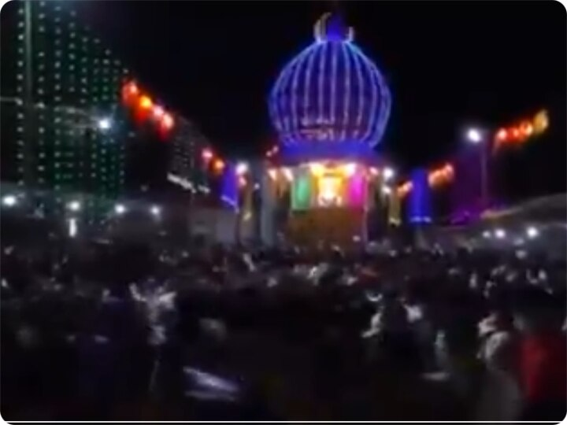
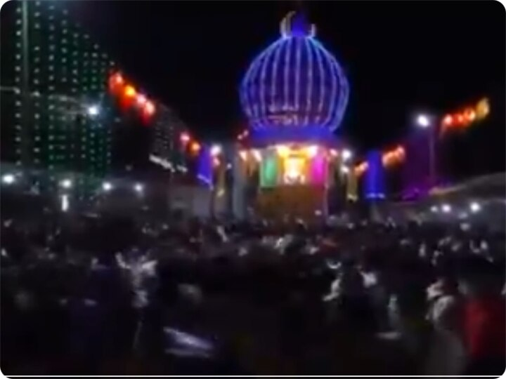

Welcome to Someshwara Temple
Someshwara Temple is one of the most revered temples in Mangalore, known for its stunning architecture and rich history.
About the Temple
Someshwara Temple is dedicated to Lord Shiva and is located in the beautiful coastal town of Mangalore. The temple is known for its serene environment and cultural significance.Sanctorium of Lord Somanatha at Shree Kshetra Someshwara is considered to be one of the 12 sacred Shiva Kshetras of Indian continent. It is situated on the banks of Arabian Sea at the Western Ghats of South India thirteen kilometres away from Mangalore. The kshetra is known as Rudrapada Kshetra, and is also a famous piligrimage centre for performing Pitrakrayas (last rituals of departed soul). It is also a hot tourist spot known for its beautiful scenic spot for viewing the sunset and for its beach. The Temple has been built at an elevated spot in form of fort and it has its own legendary history. It is believed that King Kharasura has built this temple and worshipped Lord Somanatha. Kharasura was the relative of Raavana, the demon King and as such the temple is believed to have been existing right from Ramayana period of Trethayuga. It is also believed that Pandavas of Mahabharata times visited this place and worshipped Lord Somanatha. A lake near Somanatha temple is called as "Gadha Teertha" said to have been built by Bhimasena. Historically it is said to have been built by Kings of Alupa Dynasty in 10th century A.D. The temple was under the Administrative rule of Kadambas of Banavasi, and Choula Kings of Ullala of 12th Centrury A.D. The two inscriptions found in the temple says that it was renovated in 15th Century A.D. at the time of Vijayanagara King Immadi Devaraya by Rajaguru Sree Kriyashaktri Devavodeya. The temple is surrounded by Nagabana on its southwestern side and has a Udhbhava Naga and there are other temples of Lord Siddivinayaka, Lord Gopala Krishna, Lord Janardhana and Raktheswari.
Location
The temple is situated in Ullal, Mangalore, Karnataka. It is easily accessible by road and offers a picturesque view of the Arabian Sea.
Images
Explore the beauty of Someshwara Temple through our gallery of images.
 

Contact Us
Email: hmansib520@gmail.com
Phone: +91 9353260505
Pooja Timings
| Day | Morning | Evening |
|---|---|---|
| Monday | 6:00 AM - 8:00 AM | 6:00 PM - 8:00 PM |
| Tuesday | 8:00 AM - 8:00 AM | 4:00 PM - 8:00 PM |
| wednesday | 10:00 AM - 8:00 AM | 4:00 PM - 9:00 PM |
| Thursday | 9:00 AM - 8:00 AM | 4:00 PM - 9:00 PM |
| Friday | 6:00 AM - 8:00 AM | 6:00 PM - 8:00 PM |
| Saturdayday | 10:00 AM - 8:00 AM | 4:00 PM - 8:00 PM |